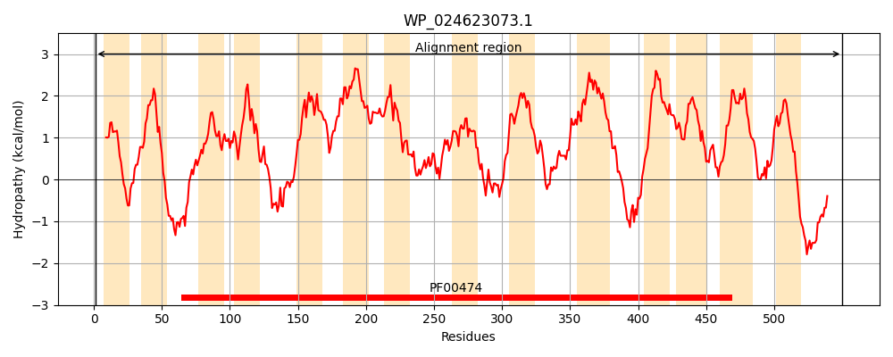
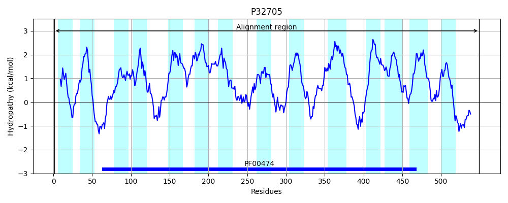
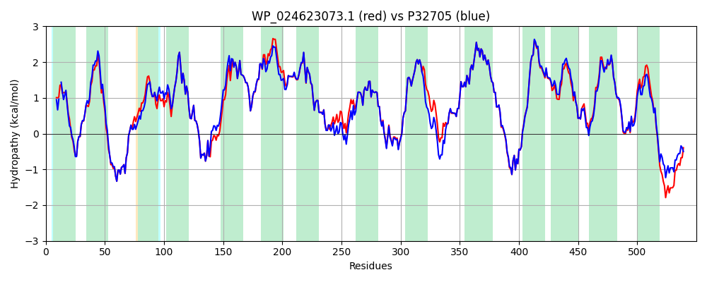

Hit Accession: P32705
Hit TCID: 2.A.21.7.2
Hit Description: gnl|BL_ORD_ID|9852 gnl|TC-DB|P32705|2.A.21.7.2 Putative symporter yjcG - Escherichia coli.
Mach Len: 550
e:0.000000
Query TMS Count : 14
Hit TMS Count: 14
TMS-Overlap Score: 14.000000
Predicted Substrates:CHEBI:13704;acetate, CHEBI:5509;glyoxylic acid
BLAST Alignment:
Score: 2564 , Bit scores: 992 bits, E-value: 0.0e+00, Alignment length: 550, Percentage identity: 91
Query: 1 MKRVLTALAATLLPLGAHAADAITGAVQRQPTNWQAIVMFLIFVALTLYITYWASKRVRSRSDYYTAGGNITGFQNGLAIAGDFMSAASFLGISALVYTSGYDGLIYSLGFLVGWPIILFLIAERLRNLGRYTFADVASYRLKQGPIRTLSACGSLVVVALYLIAQMVGAGKLIQLLFGLNYHVAVVLVGVLMVLYVLFGGMLATTWVQIIKAVLLLCGASFMAFMVMKHVGFSFNNLFTEAMAVHPKGAAIMSPGGLVKDPISALSLGLGLMFGTAGLPHILMRFFTVSDAKEARKSVFYATGFMGYFYILTFIIGFGAIMLVGANPAFKDAAGQLIGGNNMAAVHLADAVGGNLFLGFISAVAFATILAVVAGLTLAGASAVSHDLYANVFRKGATERQELKVSKITVLILGVVAILLGILFENQNIAFMVGLAFSIAASCNFPIILLSMYWSKLTTRGAMVGGWLGLLTAVILMILGPTIWVQILGHEKALFPYEYPALFSIAIAFIGIWVFSATDNSPEGMREREQFRAQFIRSQTGIGIERGQAH 550
MKRVLTALAATL P A+AADAI+GAV+RQPTNWQAI+MFLIFV TL ITYWASKRVRSRSDYYTAGGNITGFQNGLAIAGD+MSAASFLGISALV+TSGYDGLIYSLGFLVGWPIILFLIAERLRNLGRYTFADVASYRLKQGPIR LSACGSLVVVALYLIAQMVGAGKLI+LLFGLNYH+AVVLVGVLM++YVLFGGMLATTWVQIIKAVLLL GASFMAFMVMKHVGFSFNNLF+EAMAVHPKG IM PGGLVKDPISALSLGLGLMFGTAGLPHILMRFFTVSDA+EARKSVFYATGFMGYFYILTFIIGFGAIMLVGANP +KDAAG LIGGNNMAAVHLA+AVGGNLFLGFISAVAFATILAVVAGLTLAGASAVSHDLYANVF+KGATER+EL+VSKITVLILGV+AI+LG+LFENQNIAFMVGLAF+IAASCNFPIILLSMYWSKLTTRGAM+GGWLGL+TAV+LMILGPTIWVQILGHEKA+FPYEYPALFSI +AF+GIW FSATDNS EG RERE FRAQFIRSQTG G+E+G+AH
Sbjct: 1 MKRVLTALAATL-PFAANAADAISGAVERQPTNWQAIIMFLIFVVFTLGITYWASKRVRSRSDYYTAGGNITGFQNGLAIAGDYMSAASFLGISALVFTSGYDGLIYSLGFLVGWPIILFLIAERLRNLGRYTFADVASYRLKQGPIRILSACGSLVVVALYLIAQMVGAGKLIELLFGLNYHIAVVLVGVLMMMYVLFGGMLATTWVQIIKAVLLLFGASFMAFMVMKHVGFSFNNLFSEAMAVHPKGVDIMKPGGLVKDPISALSLGLGLMFGTAGLPHILMRFFTVSDAREARKSVFYATGFMGYFYILTFIIGFGAIMLVGANPEYKDAAGHLIGGNNMAAVHLANAVGGNLFLGFISAVAFATILAVVAGLTLAGASAVSHDLYANVFKKGATEREELRVSKITVLILGVIAIILGVLFENQNIAFMVGLAFAIAASCNFPIILLSMYWSKLTTRGAMMGGWLGLITAVVLMILGPTIWVQILGHEKAIFPYEYPALFSITVAFLGIWFFSATDNSAEGARERELFRAQFIRSQTGFGVEQGRAH 549 | Protein Hydropathy Plots: |
|---|
|  |  |
Pairwise Alignment-Hydropathy Plot:
|
|---|
|  |